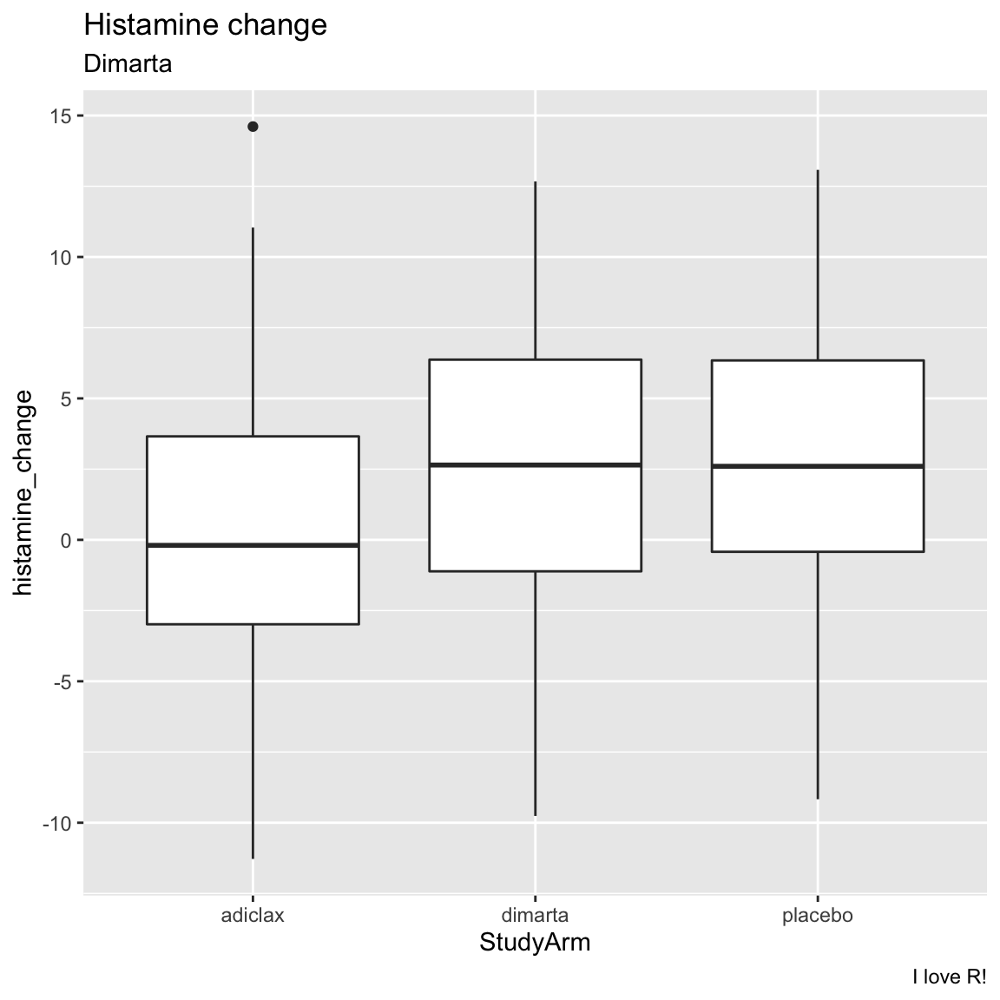
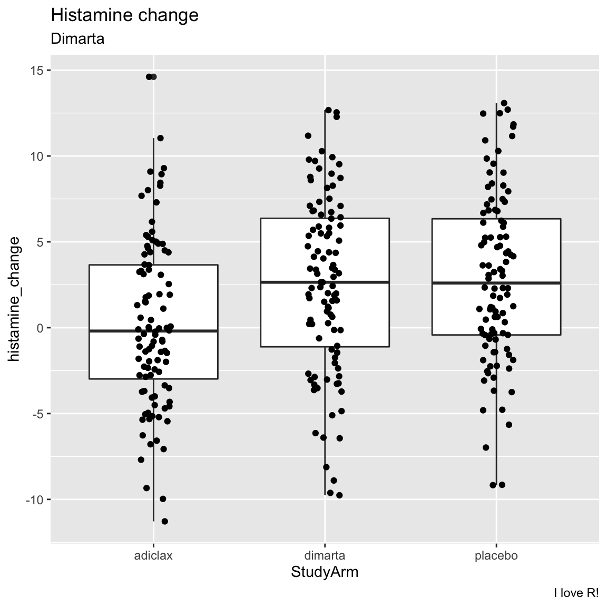
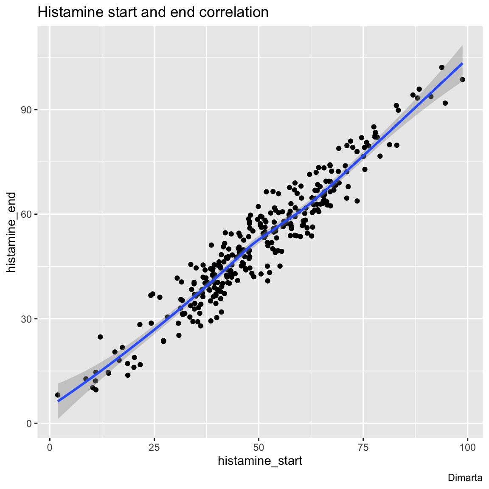
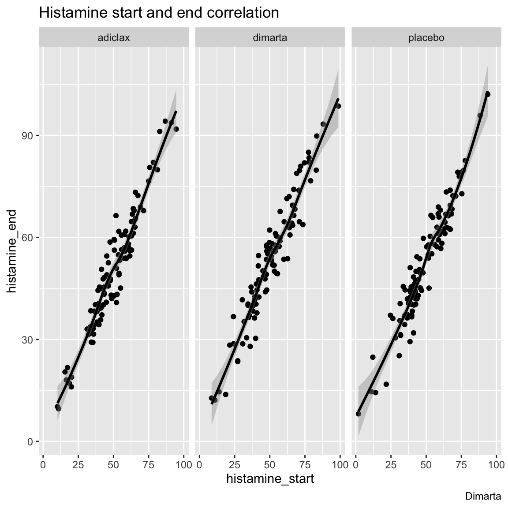

adapted from formerfda.com
{kind=link}
Overview
In this case study, we will look at the results of a clinical trial exploring the effectiveness of a new medication called dimarta on reducing histamine in patients with a disease that leads to chronically high histamine levels. In the study, 300 patients were assigned to one of three different treatment arms. One arm was given a placebo. The other arm was given adiclax – the standard of care for the disease. Finally, the third arm was given dimarta. There were two main measures of interest in the trial: patient’s changes in histamine from the beginning to the end of the trial, and their change in quality of life (measured by self report).
In addition to exploring the effects of the three medications, the researchers are interested in the extent to which three different biomarkers, dw, ms, and np, are correlated with therapeutic outcomes. In other words, to patients that express one or more of these biomarkers have better, or worse, outcomes that those that do not express these biomarkers?
Tasks
A - Getting Setup
Open your
bernrbootcampR project. It should already have the folders1_Dataand2_Code.We want to generate an R Markdown document for this case study. In RStudio, click File – New File – R Markdown – Document – Html. Save your markdown file in your main project directory under the name
dimarta_casestudy.Rmd.At the top of the script load the
tidyversepackage.From time to time - don’t forget to
Knityour code with the Knit-Button.

B - Data I/O
Using
read_csv(), load thedimarta_trial.csv,dimarta_demographics.csv, anddimarta_biomarker.csvdatasets as three new objects calledtrial_df,demographics_df, andbiomarker_df.Get a first impression of the objects you just created by exploring them with a mixture of the
View(),head(),names(), andstr()functions. Were they all loaded correctly?
trial_df# A tibble: 300 x 6
PatientID arm histamine_start histamine_end qol_start qol_end
<chr> <dbl> <dbl> <dbl> <dbl> <dbl>
1 txdjezeo 1 58.6 67.0 3 3
2 htxfjlxk 3 36.1 28.0 3 4
3 vkdqhyez 1 57.7 57.3 2 2
4 dbuvrwfq 3 56.6 57.4 2 3
5 ydaitaah 2 64.7 67.9 5 7
6 omhxokdr 1 37.4 41.7 2 2
7 dsybafny 1 88.4 95.9 4 6
8 fdfmcoto 2 20.2 18.9 2 2
9 rwsbykxe 2 48.3 43.0 3 3
10 xocueqqe 3 48.6 55.2 1 1
# … with 290 more rowsdemographics_df# A tibble: 300 x 5
PatientID age gender site diseasestatus
<chr> <dbl> <dbl> <chr> <chr>
1 pkyivajv 36 0 Tokyo Mid
2 dbuvrwfq 39 0 Paris Late
3 jhuztppp 30 0 Tokyo Mid
4 qejexgza 34 1 Tokyo Late
5 cszrjxju 41 1 Tokyo Late
6 uhvgttqh 31 0 London Late
7 cflnybdw 45 1 Tokyo Mid
8 igobmmvj 48 0 Tokyo Late
9 lcrtmerg 35 0 London Late
10 fjjrnsnt 43 1 London Mid
# … with 290 more rowsbiomarker_df# A tibble: 900 x 3
PatientID Biomarker BiomarkerStatus
<chr> <chr> <lgl>
1 ygazqssv dw FALSE
2 qosueuyw ms FALSE
3 bhhykjvw ms FALSE
4 ifajorty np TRUE
5 gxnsybdt ms FALSE
6 igobmmvj ms FALSE
7 knnzlzun ms FALSE
8 glzcbmby ms FALSE
9 gxnsybdt dw TRUE
10 fzrhdpdu np FALSE
# … with 890 more rowsC - Data Wrangling
- Change the name of the column
armin thetrial_dfdata toStudyArm.
trial_df <- trial_df %>%
rename(StudyArm = arm)- Using the
table()function, look at the values of theStudyArmcolumn intrial_df. You’ll notice the values are 1, 2, and 3. Usingmutate()andcase_when()change these values to the appropriate names of the study arms (look at the variable descriptions to see which is which!)
# table(trial_df$StudyArm)
trial_df <- trial_df %>%
mutate(StudyArm = case_when(
StudyArm == 1 ~ "placebo",
StudyArm == 2 ~ "adiclax",
StudyArm == 3 ~ "dimarta"
))- In the
demographics_dfdata, you’ll see that gender is coded as 0 and 1. Usingmutate()create a new column indemographics_dfcalledgender_cthat shows gender as a string, where 0 = “male”, and 1 = “female”.
demographics_df <- demographics_df %>%
mutate(gender_c = case_when(
gender == 0 ~ "male",
gender == 1 ~ "female"
))- Now let’s create a new object called
dimarta_dfthat combines data fromtrial_dfanddemographics_df. To do this, useleft_join()to combine thetrial_dfdata with thedemographics_dfdata. This will merge the two datasets so you can have the study results and demographic data in the same dataframe. Make sure to assign the result to a new object calleddimarta_df
# Create a new dataframe called dimarta_df that contains both trial_df and demographics_df
dimarta_df <- trial_df %>%
left_join(demographics_df)Joining, by = "PatientID"- You’ll notice that the
biomarker_dfdataframe is in the ‘long’ format, where each row is a patient’s biomarker result. Making use of thespread()function, create a new dataframe calledbiomarker_wide_dfwhere each row is a patient, and the results from different biomarkers are in different columns. When you finish, look atbiomarker_wide_dfto see how it looks!
# Convert biomarker_df to a wide format using spread()
biomarker_wide_df <- biomarker_df %>%
spread(Biomarker, BiomarkerStatus)- Now, using the
left_joinfunction, add thebiomarker_wide_dfdata to thedimarta_dfdata! Now you should have all of the data in a single dataframe calleddimarta_df
dimarta_df <- dimarta_df %>%
left_join(biomarker_wide_df)Joining, by = "PatientID"- View
dimarta_dfto make sure the data look correct! The data should have one row for each patient, and 13 separate columns, includingdw,ms, andnp
dimarta_df# A tibble: 300 x 14
PatientID StudyArm histamine_start histamine_end qol_start qol_end age
<chr> <chr> <dbl> <dbl> <dbl> <dbl> <dbl>
1 txdjezeo placebo 58.6 67.0 3 3 39
2 htxfjlxk dimarta 36.1 28.0 3 4 42
3 vkdqhyez placebo 57.7 57.3 2 2 47
4 dbuvrwfq dimarta 56.6 57.4 2 3 39
5 ydaitaah adiclax 64.7 67.9 5 7 35
6 omhxokdr placebo 37.4 41.7 2 2 41
7 dsybafny placebo 88.4 95.9 4 6 35
8 fdfmcoto adiclax 20.2 18.9 2 2 50
9 rwsbykxe adiclax 48.3 43.0 3 3 35
10 xocueqqe dimarta 48.6 55.2 1 1 42
# … with 290 more rows, and 7 more variables: gender <dbl>, site <chr>,
# diseasestatus <chr>, gender_c <chr>, dw <lgl>, ms <lgl>, np <lgl>- Using the
mean()function, calculate the mean age of all patients.
mean(dimarta_df$age)[1] 39.9- Create a table showing how many male and female patients were in the trial.
dimarta_df %>%
group_by(gender_c) %>%
summarise(
Counts = n()
)# A tibble: 2 x 2
gender_c Counts
<chr> <int>
1 female 140
2 male 160- Now, using similar code, find out how many patients were assigned to each study arm.
dimarta_df %>%
group_by(StudyArm) %>%
summarise(
Counts = n()
)# A tibble: 3 x 2
StudyArm Counts
<chr> <int>
1 adiclax 100
2 dimarta 100
3 placebo 100- Find out how many men and women were assigned to each study arm (Hint: You can use very similar code to what you used above, just add a second grouping variable!)
dimarta_df %>%
group_by(StudyArm, gender_c) %>%
mutate(Counts = n())# A tibble: 300 x 15
# Groups: StudyArm, gender_c [6]
PatientID StudyArm histamine_start histamine_end qol_start qol_end age
<chr> <chr> <dbl> <dbl> <dbl> <dbl> <dbl>
1 txdjezeo placebo 58.6 67.0 3 3 39
2 htxfjlxk dimarta 36.1 28.0 3 4 42
3 vkdqhyez placebo 57.7 57.3 2 2 47
4 dbuvrwfq dimarta 56.6 57.4 2 3 39
5 ydaitaah adiclax 64.7 67.9 5 7 35
6 omhxokdr placebo 37.4 41.7 2 2 41
7 dsybafny placebo 88.4 95.9 4 6 35
8 fdfmcoto adiclax 20.2 18.9 2 2 50
9 rwsbykxe adiclax 48.3 43.0 3 3 35
10 xocueqqe dimarta 48.6 55.2 1 1 42
# … with 290 more rows, and 8 more variables: gender <dbl>, site <chr>,
# diseasestatus <chr>, gender_c <chr>, dw <lgl>, ms <lgl>, np <lgl>,
# Counts <int>- Add a new column to the
dimarta_dfdata calledhistamine_changethat shows the change in patient’s histamine levels from the start to the end of the trial (Hint: usemutate()and just subtracthistamine_startfromhistamine_end!)
dimarta_df <- dimarta_df %>%
mutate(
histamine_change = histamine_end - histamine_start
)- Add a new column to
dimarta_dfcalledqol_changethat shows the change in patient’s quality of life.
dimarta_df <- dimarta_df %>%
mutate(
qol_change = qol_end - qol_start
)
# Look at result
dimarta_df %>%
select(qol_change)# A tibble: 300 x 1
qol_change
<dbl>
1 0
2 1
3 0
4 1
5 2
6 0
7 2
8 0
9 0
10 0
# … with 290 more rows- Calculate the percentage of patients who tested positive for each of the three biomarkers (Hint: If you calculate the
mean()of a logical vector, you will get the percentage of TRUE values!)
# Calculate percent of patients with positive biomarkers
dimarta_df %>%
summarise(
dw_mean = mean(dw),
ms_percent = mean(ms),
np_percent = mean(np)
)# A tibble: 1 x 3
dw_mean ms_percent np_percent
<dbl> <dbl> <dbl>
1 0.257 0.19 0.233- Were there different distributions of age in the different trial sites? To answer this, separately calculate the mean and standard deviations of patient ages in each site. (Hint: group the data by
site, then calculate two separate summary statistics:age_mean = mean(age), andage_sd = sd(age).
# Calculate the mean change in histamine for each study site
dimarta_df %>%
group_by(site) %>%
summarise(
age_mean = mean(age),
age_sd = sd(age)
)# A tibble: 3 x 3
site age_mean age_sd
<chr> <dbl> <dbl>
1 London 39.9 5.86
2 Paris 39.8 4.84
3 Tokyo 40.1 4.50- Calculate the mean change in histamine results separately for each study site
# Calculate the mean change in histamine for each study site
dimarta_df %>%
group_by(site) %>%
summarise(
histamine_change_mean = mean(histamine_change, na.rm = TRUE)
)# A tibble: 3 x 2
site histamine_change_mean
<chr> <dbl>
1 London 1.99
2 Paris 2.29
3 Tokyo 1.29- Calculate the mean change in histamine results (
histamine_change) for each study arm. Which study arm had a largest decrease in histamine?
# Calculate the mean change in histamine for each study site
dimarta_df %>%
group_by(StudyArm) %>%
summarise(
histamine_change_mean = mean(histamine_change, na.rm = TRUE)
)# A tibble: 3 x 2
StudyArm histamine_change_mean
<chr> <dbl>
1 adiclax 0.210
2 dimarta 2.51
3 placebo 2.90 - Calculate the mean change in quality of life (
qol_change) for each study arm. Do the results match what you found with the histamine results?
# Calculate the mean change in histamine for each study site
dimarta_df %>%
group_by(StudyArm) %>%
summarise(
qol_change_mean = mean(qol_change, na.rm = TRUE)
)# A tibble: 3 x 2
StudyArm qol_change_mean
<chr> <dbl>
1 adiclax 0.06
2 dimarta 0.01
3 placebo -0.15D - Plotting
- Create boxplots showing the relationship between study arm and histamine change.
ggplot(data = dimarta_df,
mapping = aes(x = StudyArm,
y = histamine_change)) +
geom_boxplot() +
labs(title = "Histamine change",
subtitle = "Dimarta",
caption = "I love R!")
- Try using
geom_jitter()to add the raw points to the plot
ggplot(data = dimarta_df,
mapping = aes(x = StudyArm,
y = histamine_change)) +
geom_boxplot() +
geom_jitter(width = .1) +
labs(title = "Histamine change",
subtitle = "Dimarta",
caption = "I love R!")
- Create the same plot as above, but instead of analysing study arm, try analysing gender. (Tip! convert gender to a factor with
factor(gender)) What do you find? Did one gender have better histamine improvements than the other?
ggplot(data = dimarta_df,
mapping = aes(x = factor(gender),
y = histamine_change)) +
geom_boxplot() +
geom_jitter(width = .1) +
labs(title = "Histamine change",
subtitle = "Dimarta",
caption = "I love R!",
x = "Gender")
- Now create the same plot but show both gender and study arm in the same plot. One way to do this would be to color the points by gender!
ggplot(data = dimarta_df,
mapping = aes(x = StudyArm,
y = histamine_change,
col = factor(gender))) +
geom_boxplot() +
geom_jitter(width = .1) +
labs(title = "Histamine change",
subtitle = "Dimarta",
caption = "I love R!",
x = "Gender")
- Is there a correlation between patient’s starting and ending histamiine levels? Create a scatterplot with a regression line to find out!
ggplot(data = dimarta_df,
aes(x = histamine_start,
y = histamine_end)) +
geom_point() +
geom_smooth() +
labs(title = "Histamine start and end correlation",
caption = "Dimarta")
- Now create the same plot as above, but have different colored points for different study arms (but only one regression line).
ggplot(data = dimarta_df,
aes(x = histamine_start,
y = histamine_end,
col = StudyArm)) +
geom_point() +
geom_smooth(col = "black") +
labs(title = "Histamine start and end correlation",
caption = "Dimarta")
- Instead of having different study arms as different colored points, create another plot using
facet_wrap()to have different study arms in different plotting panels.
ggplot(data = dimarta_df,
aes(x = histamine_start,
y = histamine_end)) +
geom_point() +
geom_smooth(col = "black") +
facet_wrap(~ StudyArm) +
labs(title = "Histamine start and end correlation",
caption = "Dimarta")
E - Statistics
- Create a regression model predicting final histamine levels as a function of all variables in the dataset that make clinical sense to include. Call it
full_glm.
full_glm <- glm(formula = histamine_end ~ age + StudyArm + gender + site + histamine_start,
data = dimarta_df)- Explore the object with
summary(),tidy()(part of thebroompackage), andnames(). Which variables predict final histamine levels?
summary(full_glm)
Call:
glm(formula = histamine_end ~ age + StudyArm + gender + site +
histamine_start, data = dimarta_df)
Deviance Residuals:
Min 1Q Median 3Q Max
-12.520 -3.377 0.039 3.549 14.252
Coefficients:
Estimate Std. Error t value Pr(>|t|)
(Intercept) -2.8252 2.5661 -1.10 0.27182
age 0.0909 0.0569 1.60 0.11104
StudyArmdimarta 2.3565 0.7051 3.34 0.00094 ***
StudyArmplacebo 2.6696 0.7063 3.78 0.00019 ***
gender -0.7843 0.5776 -1.36 0.17554
siteParis 0.2599 0.6968 0.37 0.70938
siteTokyo -0.7062 0.7124 -0.99 0.32237
histamine_start 0.9979 0.0172 58.06 < 2e-16 ***
---
Signif. codes: 0 '***' 0.001 '**' 0.01 '*' 0.05 '.' 0.1 ' ' 1
(Dispersion parameter for gaussian family taken to be 24.7)
Null deviance: 91708.9 on 299 degrees of freedom
Residual deviance: 7213.3 on 292 degrees of freedom
AIC: 1823
Number of Fisher Scoring iterations: 2library(broom)
tidy(full_glm)# A tibble: 8 x 5
term estimate std.error statistic p.value
<chr> <dbl> <dbl> <dbl> <dbl>
1 (Intercept) -2.83 2.57 -1.10 2.72e- 1
2 age 0.0909 0.0569 1.60 1.11e- 1
3 StudyArmdimarta 2.36 0.705 3.34 9.40e- 4
4 StudyArmplacebo 2.67 0.706 3.78 1.90e- 4
5 gender -0.784 0.578 -1.36 1.76e- 1
6 siteParis 0.260 0.697 0.373 7.09e- 1
7 siteTokyo -0.706 0.712 -0.991 3.22e- 1
8 histamine_start 0.998 0.0172 58.1 2.09e-162names(full_glm) [1] "coefficients" "residuals" "fitted.values"
[4] "effects" "R" "rank"
[7] "qr" "family" "linear.predictors"
[10] "deviance" "aic" "null.deviance"
[13] "iter" "weights" "prior.weights"
[16] "df.residual" "df.null" "y"
[19] "converged" "boundary" "model"
[22] "call" "formula" "terms"
[25] "data" "offset" "control"
[28] "method" "contrasts" "xlevels" - Add the residuals from this model as a new column in your data called
residuals_full
dimarta_df <- dimarta_df %>%
mutate(residuals_full = full_glm$residuals)- Plot the residuals from the regression as a histogram (hint: you can find the residuals in your regression object). How do they look?
ggplot(dimarta_df,
aes(x = residuals_full)) +
geom_histogram()`stat_bin()` using `bins = 30`. Pick better value with `binwidth`.
- Add the absolute value of the residuals from the model as a new column in your data called
residuals_abs_full
dimarta_df <- dimarta_df %>%
mutate(residuals_abs_full = abs(residuals_full))- Plot the absolute value of the residuals as a histogram. How do these look?
ggplot(dimarta_df,
aes(x = residuals_abs_full)) +
geom_histogram()`stat_bin()` using `bins = 30`. Pick better value with `binwidth`.
- What is the mean value of the absolute value of this residuals?
dimarta_df %>%
summarise(residuals_abs_full_mean = mean(residuals_abs_full))# A tibble: 1 x 1
residuals_abs_full_mean
<dbl>
1 3.95- Now create a regression model predicting histamine change based only on the study arm. Call it
arm_glm. Then follow the steps above to add the residuals (original and absolute) from this model to your dataframe. Call themresiduals_armandresiduals_abs_arm.
arm_glm <- glm(formula = histamine_end ~ StudyArm,
data = dimarta_df)- Calculate the mean of the raw and absolute residuals from your
arm_glmmodel. How do they compare to yourfull_glmmodel? What does this mean?
mean(arm_glm$residuals)[1] 1.67e-14mean(abs(arm_glm$residuals))[1] 13.8Datasets
| File | Rows | Columns | Description |
|---|---|---|---|
| dimarta_trial.csv | 300 | 6 | Key DIMARTA trial outcomes |
| dimarta_biomarker.csv | 900 | 3 | Biomarker status’ for 3 different biomarkers for each patient. |
| dimarta_demographics.csv | 300 | 5 | Demographic information for each patient |
Column Descriptions
dimarta_trial.csv
| Variable | Description |
|---|---|
| PatientID | Unique patient id |
| arm | Treatment arm, either 1 = placebo, 2 = adiclax (the standard of treatment), or 3 = dimarta (the target drug) |
| histamine_start | histamine value at the start of the trial |
| histamine_end | histamine value at the end of the trial |
| qol_start | Patient’s rated quality of life at the start of the trial |
| qol_end | Patient’s rated quality of life at the end of the trial |
dimarta_demographics.csv
| Variable | Description |
|---|---|
| PatientID | Unique patient id |
| age | Patient age |
| gender | Patient gender, 0 = male, 1 = female |
| site | Site where the clinical trial was conducted |
| diseasestatus | Status of the patient’s disease at start of trial |
dimarta_biomarker.csv
| Variable | Description |
|---|---|
| PatientID | Unique patient id |
| Biomarker | One of three biomarkers: dw, ms, and np |
| BiomarkerStatus | Result of the test for the biomarker. |
Functions
Packages
| Package | Installation |
|---|---|
tidyverse |
install.packages("tidyverse") |
haven |
install.packages("haven") |